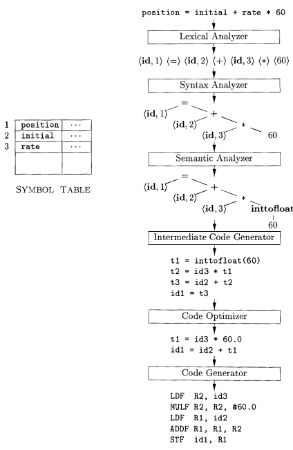
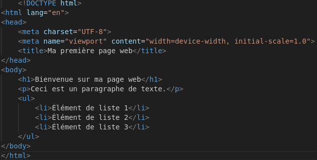

Les langages de programmation
Comme nous l'avons vu dans la partie Histoire de l'ordinateur, les programmes et leurs langages sont essentiels pour mettre au point des projets sur les ordinateurs. La conception de langages de programmation est un sujet complexe car il relie le hardware (la partie physique de l'ordinateur) à la partie software (la partie virtuelle). Cette conception difficile a justement pour but de rendre la vie facile aux programmeurs en réduisant la complexité de la programmation et en optimisant les langages afin d'être les plus rapide et efficaces. L'informatique a donc vu plusieurs évolutions des langages informatiques qui ont permis de créer les applications virtuelles telles qu'on les connait aujourd'hui.
Quels étaient les premiers langages de programmations ?
Dans les années 1940, le langage assembleur est utilisé par les premiers ordinateurs notamment l'ENIAC en 1947. L'assembleur est un langage de bas-niveau c'est-à-dire un langage qui est directement lié aux instructions machines. La raison pour laquelle il est utilisé à cette époque est qu'il est le plus facile pour les programmeurs à lire. Aujourd'hui, il est considéré comme assez complexe à l'emploi et est principalement utilisé durant le déboguage ou le reverse-engineering. L'assembleur est fait d'opcode qui servent à indiquer les instructions à exécutées. Par exemple, dans l'assembleur moderne, nous avons des programmes qui ressemblent à ça :
Programme décompilé en assembleur
0x0000555555555139 <+0>: push rbp
0x000055555555513a <+1>: mov rbp,rsp
0x000055555555513d <+4>: sub rsp,0x10
0x0000555555555141 <+8>: mov DWORD PTR [rbp-0x4],0x1
0x0000555555555148 <+15>: jmp 0x555555555167
0x000055555555514a <+17>: mov eax,DWORD PTR [rbp-0x4]
0x000055555555514d <+20>: mov esi,eax
0x000055555555514f <+22>: lea rax,[rip+0xeae] # 0x555555556004
0x0000555555555156 <+29>: mov rdi,rax
0x0000555555555159 <+32>: mov eax,0x0
0x000055555555515e <+37>: call 0x555555555030
0x0000555555555163 <+42>: add DWORD PTR [rbp-0x4],0x1
0x0000555555555167 <+46>: cmp DWORD PTR [rbp-0x4],0x5
0x000055555555516b <+50>: jle 0x55555555514a
0x000055555555516d <+52>: mov eax,0x0
0x0000555555555172 <+57>: leave
0x0000555555555173 <+58>: ret
Dans ce programme, nous pouvons voir à gauche l'adresse mémoire des instructions stocké dans la stack (pile). Le nombre qui se trouve juste après (<+4> par exemple) est l'offset (décalage en octet) entre les adresses d'instructions. Ensuite, nous retrouvons l'instructions elle-même, par exemple push, mov ou call qui indique les opérations à faire. Et enfin, les paramètres utilisés par les instructions tels que les registres rbp, rsp ou eax et des valeurs en hexadécimal.
L'assembleur a également trouvé sa place dans la création de compilateur. Mais c'est quoi un compilateur ?

Toujours dans l'optique de créer des langages de programmations les plus simples possibles, le compilateur joue un rôle crucial dans ce processus. Il est chargé de traduire les instructions de haut-niveau (écrites par le programmeur en instructions de bas-niveau que l'ordinateur peut comprendre et exécuter. La conception de compilateur est passé par un processus qu'on a appelé le bootstrapping qui consiste à créer des compilateur avec un langage que le compilateur lui-même doit interpréter. On doit donc utiliser un compilateur appelé Amorce qui traduit quelques fonctionnalités classiques afin de pouvoir créer ensuite le compilateur qu'on voulait. Un compilateur est un outil complexe mais essentiel dans la compréhension des langages de façon approfondies. C'est la raison pour laquelle le livre Dragon Book existe.
Mais du coup, c'est quoi les premiers langages de haut-niveau ?
Dans les premiers langages de haut-niveau, on y compte le célèbre Fortran. Conçu en 1954, plus simple que l'asm, il permettait de faire assez facilement des boucles, des tableaux à plusieurs dimensions et avait des très bonne performances pour un langages de haut-niveau. La possibilité de le traduire grâce à un compilateur permet une meilleure portabilité.
Programme en Fortran
program boucle
implicit none
integer :: i
do i = 1, 5
print *, 'La ligne ', i
end do
end program boucle
Dans ce programme, on voit que la syntaxe est beaucoup plus lisible et facile à comprendre. En effet, on voit que le programme définit une boucle dans laquelle on affiche le texte La ligne i où i est un nombre allant de 1 à 5
S'en suit un tas de langages performants mais tous bien différents tel que le COBOL en 1959, le BASIC en 1964 ou encore le Pascal en 1970. Ces langages ont tous des avantages d'être utilisés et sont spécialisés dans plusieurs domaines ce qui laisse le choix au programmeur d'utiliser ce dont il a besoin.
Programme en COBOL
IDENTIFICATION DIVISION.
PROGRAM-ID. Boucle.
DATA DIVISION.
WORKING-STORAGE SECTION.
01 i PIC 9(3).
PROCEDURE DIVISION.
PERFORM VARYING i FROM 1 BY 1 UNTIL i > 5
DISPLAY "La ligne " i
END-PERFORM.
STOP RUN.
Programme en BASIC
10 FOR i = 1 TO 5
20 PRINT "La ligne "; i
30 NEXT i
Programme en Pascal
program Boucle;
var
i: integer;
begin
for i := 1 to 5 do
writeln('La ligne ', i);
end.
Programme en C
#include
int main(){
for(int i = 1; i < 6; i++){
printf("Ligne %d\n", i);
};
return 0;
}
En 1969, dans les laboratoires Bell, la conception d'un système d'exploitation nommé Unix (qui a inspiré la conception du kernel Linux utilisé par beaucoup d'appareil aujourd'hui) a requis la création d'un langage appelé le C. C'est un langage compilé de haut-niveau très flexible et complet qui est très largement utilisé depuis maintenant plus de 50 ans. Il est plus ou moins le résultat final des langages compilés et un des plus performants. Il est également facile à prendre en main.
Quels sont les autres types de langage de programmation ?
On retrouve les langages déclaratifs qui décrivent comment les éléments doivent être. Contrairement aux langages compilés, les langages déclaratifs ne sont pas réellement des instructions mais plutôt des descriptions ou des caractéristiques d'éléments. Ils sont souvent utilisés dans le traitement de données ou de requête. En 1978, le langage SQL est créer afin de gérer des requêtes à des bases de données. C'est un langage de programmation presque littéraire.
Programme en SQL
SELECT u.nom, c.id_commande, c.montant
FROM utilisateurs u
JOIN commandes c ON u.id = c.id_utilisateur
WHERE u.age > 25;
Ce programme en SQL demande à une base de donnée les valeurs qui se trouvent dans les colonnes nom, id_command et montant pour toute les personnes ayant plus de 25ans. On effectue une jointure afin de lier des éléments de 2 tables différentes.

Dans les langages déclaratifs, les langages à balise sont aussi très important, bien qu'arrivés un peu plus tard. Le HTML par exemple créé dans les années 1990, est utilisé afin de créer des sites internet.
Et les langages interprété alors ?
Plutôt que de traduire au préalable tout le programme avec un compilateur, les interpréteurs traduisent et exécutent à la volée les instructions données. Ces langages nécessitent une Virtual Machine Application qui permet d'exécuter les instructions sans passé par les spécifications de l'architecture de la machine hôte. Cela signifie que peu importe la machine sur laquelle le programme est exécuté, il sera exécuté de la même façon. La machine virtuelle prend en entré le programme écrit en langage interprété et est interprété en bytecode qui est ensuite exécuté. Parmis ces langages, on y trouve Python créé en 1991, Ruby et Lua en 1993, Java ou encore PHP en 1995.
Programme en Python
for i in range(1,6):
print("La ligne", i)
Programme en Ruby
(1..5).each do |i|
puts "La ligne #{i}"
end
Programme en Lua
for i = 1, 5 do
print("La ligne " .. i)
end
Programme en PHP
<?php
for ($i = 1; $i <= 5; $i++) {
echo "La ligne $i\n";
}
?>
Ces langages de programmation offrent des fonctionnalités simples pour créer des scripts rapide pour les tâches du quotidien. Ils permettent aussi d'utiliser des fonctionnalités un peu plus avancées tel que la gestion automatique de mémoire ou même la détermination automatique de type de donnée.
Finalement, tous ces langages de programmation permettent aux programmeurs de choisir parmis le vaste paysage de fonctionnalité celles dont il a besoin. La facilité de programmation permet de créer de grandes choses plus rapidement, de manière efficace et parfois sécurisé.